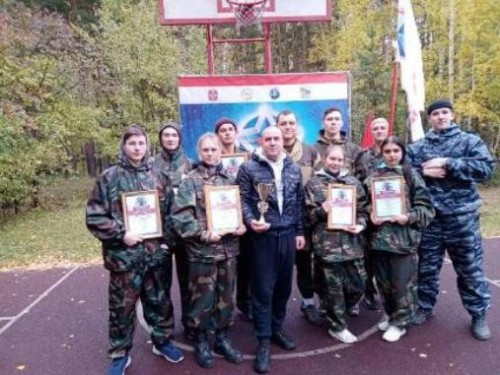
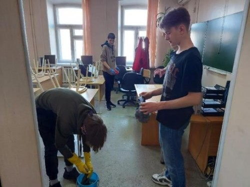
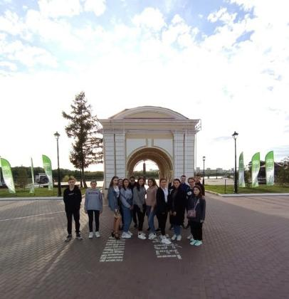

Ты, наверное, неоднократно слышал восторженные, захватывающие дух и пробивающие слезу, уморительные,
смешные, нелепые, но всегда интересные истории о студенческой жизни, рассказанные твоими родителями и их
друзьями. Что бы ни говорили, но вывод всегда один: «Студенческие годы» – это самые лучшие годы в жизни
человека! Это действительно так. Кто ещё, кроме студентов, способен не спать ночами, дни напролёт гулять, при этом,
не забывая учиться, заводить множество новых знакомств, быть в курсе последних музыкальных, книжных и
интернетовских новинок, а так же ладить с родителями и не забывать старых друзей. В общем, как говорят:
«Студенты могут всё!».
Когда тебе 18-20 лет, вся жизнь впереди, всё интересно, всё ново. Мы все узнаём, что такое жизнь, что такое
настоящая любовь и дружба, предательство и разочарование. Мы учимся вместе радоваться чужим победам и
самостоятельно преодолевать трудности. Однако ничего в этой жизни не происходит само по себе. Каждое событие
является следствием предыдущего. Жизнь требует от тебя активного участия. Она делает тебе шаг навстречу, а ты
должен сделать ответный.
Так что дерзай! Тебе предстоит найти множество новых друзей; узнать, что такое общежитие и студенческие
вечеринки; студенческая любовь и поддержка; первый зачёт и первая сессия, экзамен и его пересдача, прогулы и
отработки, стипендия и каникулы. Самая главная черта, благодаря которой вы всегда отличите из толпы студента - это
оптимизм. Он всегда уверен, что всё будет хорошо и из любого тупика есть выход и не один. Это самое главное, чего
очень часто не хватает занятым взрослым. Жизнь прекрасна! Всегда помните об этом и наслаждайтесь каждой
прожитой минутой!

04.10.2021 Итоги областного этапа военно -
спортивной игры "Зарница".
С 1 по 3 октября 2021 года на базе детского
оздоровительного лагеря "Берёзка" прошёл
областной этап военно - спортивной игры "Зарница".

17.09.2021 Всероссийский субботник «Зеленая
Россия».
17 сентября в Омском автотранспортном колледже
прошла уборка территории и мастерских.
Экологическая акция осуществлялась в рамках
Всероссийского субботника «Зеленая Россия».

15.09.2021 Экскурсия по Омской крепости.
15 сентября 2021 года студенты, проживающие в общежитии,
посетили экскурсию по Омской крепости.